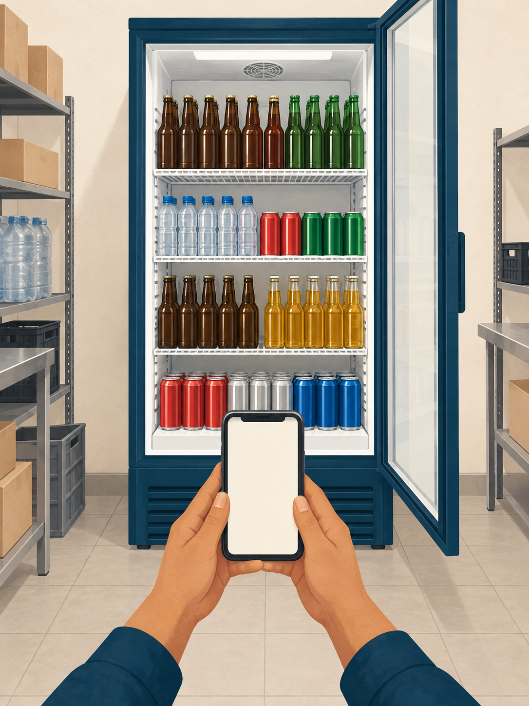

Como usar
Fotografe, confira e peça só o que falta no local.
Leia antes do primeiro uso ou vá direto à sua dúvida.
Resolver uma dúvida ↓PASSO 1 DE 5
Início do turno
Fotografe, confira e peça só o que falta.
- Selecione seu nome.
- Toque em “Capturar selfie frontal”.
- Com a selfie pronta, toque em “Iniciar turno”.
A selfie vale para o turno. Não precisa repetir em cada geladeira.
Próximo passo →PASSO 2 DE 5
Foto da geladeira
O local e a geladeira precisam estar certos.

- Escolha o setor / local.
- No equipamento certo, toque em “Fotografar”.
- Enquadre todas as prateleiras. Depois toque em “Analisar com IA”.
Use “Adicionar foto” só para ponto cego. Toque em ? para ajuda rápida.
Próximo passo →PASSO 3 DE 5
Conferência
A IA conta. Você confere.
| Produto | IA | Você |
|---|---|---|
| Água sem gás | 10 | 12 |
- Confira o produto e a quantidade na geladeira.
- Use + e − ou toque no número para digitar.
- Toque em “Confirmar esta geladeira”.
Produto fora da posição também conta. Se a foto não estiver clara, toque em “Refazer”.
Próximo passo →PASSO 4 DE 5
Pedido do local
Água em outra geladeira também entra na soma.
| Equipamento | Águas |
|---|---|
| Heineken Esquerda | 20 |
| Heineken Centro | 15 |
| Heineken Direita | 10 |
| Balcão | 0 |
| Total no local | 45 |
Meta 80 − total 45 = repor 35
- Toque em “Conferir local e pedido”.
- Confira os horários. Atualize o que estiver antigo ou sem contagem.
- Toque em “Gerar pedido com estas contagens”.
Vale a foto mais recente, conferida e salva, de cada equipamento.
Próximo passo →PASSO 5 DE 5
Envio e pausas
O estoque precisa receber o pedido.
- Toque em “Enviar pelo WhatsApp”, escolha o grupo do estoque e envie. Peça a confirmação de recebimento.
- Não abriu? Use “Copiar texto” ou “Salvar imagem”.
- Precisou sair? Use “Pausar e trocar de operador”. Outra pessoa pode contar com o próprio nome.
Para retomar seu rascunho, entre com seu nome no mesmo aparelho e endereço. “Contagem guardada” ainda aguarda envio.
Abrir o appDurante o turno
Preciso sair ou atender uma ligação
Use “Pausar e trocar de operador”. Seu rascunho fica no aparelho. Outra pessoa pode contar com o próprio nome. Para retomar, use seu nome no mesmo aparelho e endereço.
A internet caiu
“Contagem guardada” significa que ainda falta enviar. Mantenha o rascunho e retome com conexão. Só o que foi confirmado e salvo entra no estoque do local.
A água está em outra geladeira
Conte onde ela está. O app soma o mesmo produto em todos os equipamentos do local antes de calcular o que falta.
Duas pessoas contaram a mesma geladeira
Vale a foto mais recente, conferida e salva. Um envio atrasado de uma foto antiga não substitui a foto mais nova.
A foto ou a IA não ficou boa
Use “Refazer” quando a foto não mostrar bem os produtos. Se a IA estiver indisponível, preserve o rascunho e tente novamente com conexão. Não confirme uma quantidade sem conferir.
Como sei que o estoque recebeu?
Abrir o WhatsApp não envia sozinho. Escolha o grupo, envie e peça a confirmação. Se o compartilhamento falhar, use “Copiar texto” ou “Salvar imagem”.